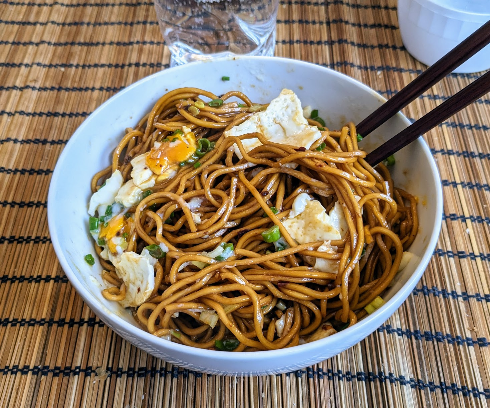

Nouilles chinoises vite fait

Pour deux personnes :
- 200g de nouilles asiatiques, le type exact n'a pas beaucoup d'importance
- Une grosse cuillère à soupe de sauce soja
- Deux cuillères à café de vinaigre noir chinois
- Une grosse cuillère à café de sucre
- (Facultatif) Une grosse cuillère à café de tamarin
- Une cuillère à café d'huile pimentée bien mélangée, avec des morceaux de piment
- Une belle pincée de glutamate ("MSG")
- (Facultatif) Un oignon frais
- (Facultatif) Quelques brins de coriandre fraîche
- Faire cuire les nouilles en suivant les instructions sur le paquet. Si le paquet de nouilles vient avec un sachet d'aromates, le jeter à la poubelle.
- Pendant ce temps, laver et émincer l'oignon et la coriandre, mélanger tout le reste.
- Égoutter les nouilles vite fait (il ne faut pas qu'elles aient le temps de sécher), mélanger avec la sauce, recouvrir d'oignon frais et de coriandre, déguster immédiatement.
Remarque : on peut, comme sur la photo ci-dessus, ajouter par-dessus un œuf au plat, que l'on peut ensuite joyeusement déchiqueter dans son bol de pâtes.